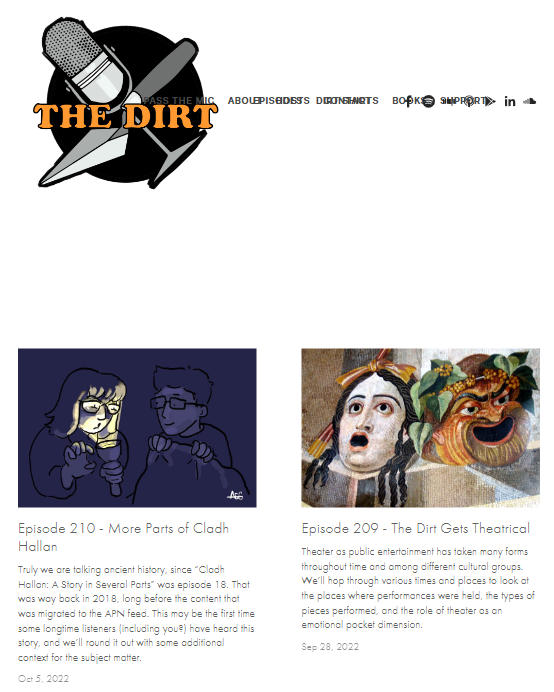
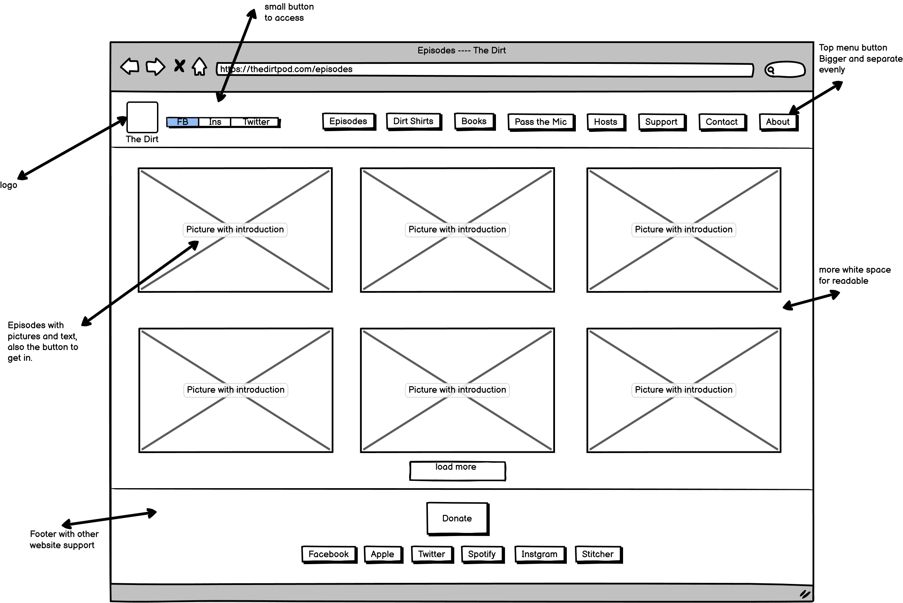
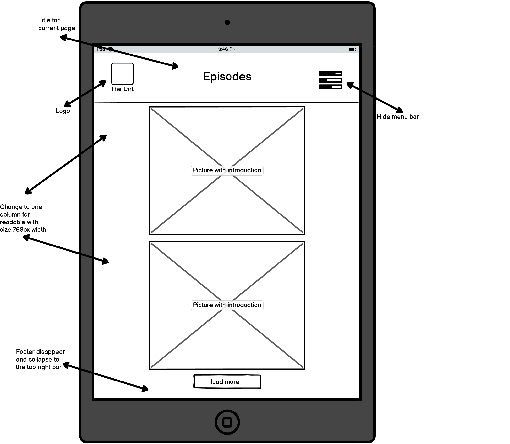
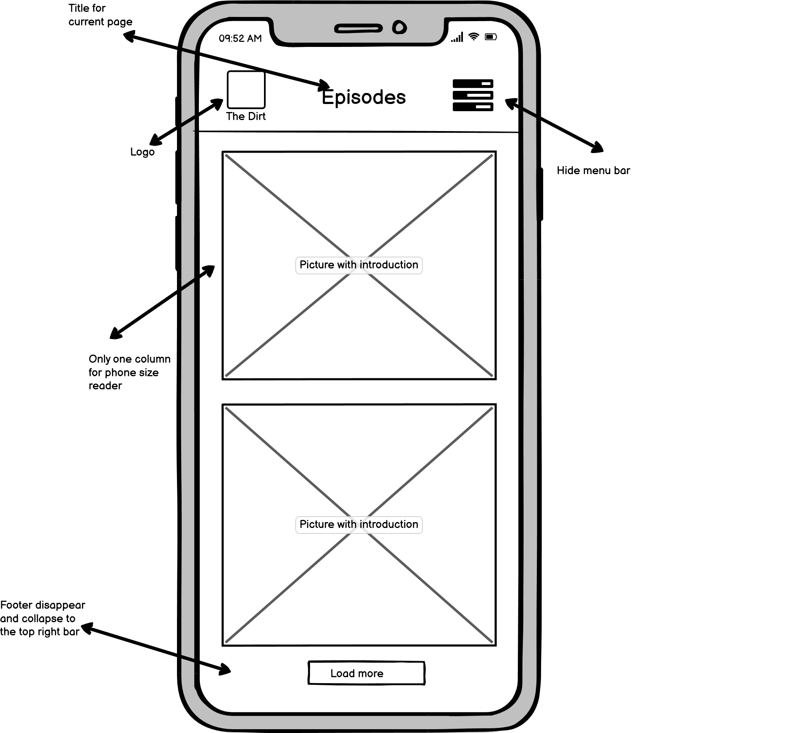
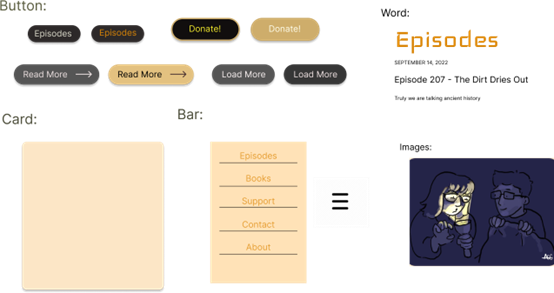
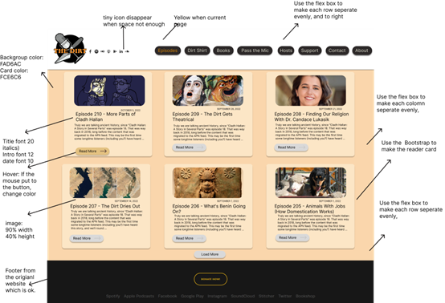
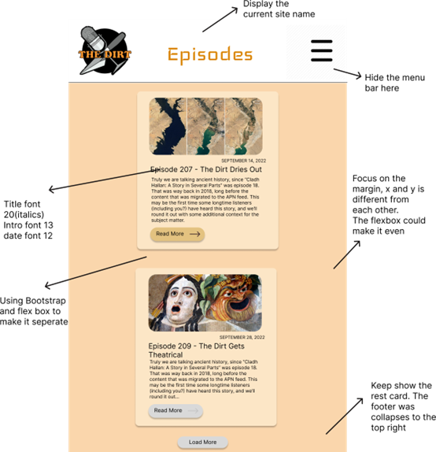
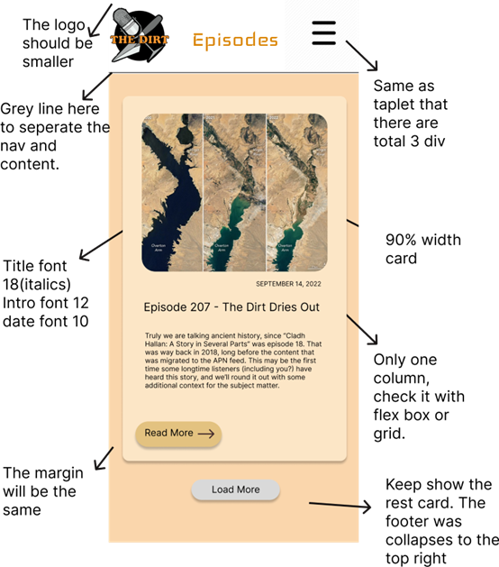

Project Overview
This project required me to select a public website to visit, analyze its shortcomings and then build a website for improvement, especially the issue of responsiveness. I needed to build a responsive website that could support screens of all three sizes: PC, tablet and phone. Here's how I did it.
Analysis
I chose this site because as a first time user, I felt that the design of the navigation bar was not very friendly and did not support the screen response of the tablet, which made me feel that it needed to be improved.
Here is the screenshot of the website and the link to Click Here.

Usability
- The site has very small navigation bar buttons, which is not user-friendly.
- The site has too much white space at the top, but the content sections are too close together, and the ratio is not suitable for usability.
- The site supports web and mobile browsing, but it doesn't support tablet or middle size, and the navigation bar buttons overlap.
- The site's image ratio is too large, with one image taking up about a quarter of the screen, and the content is too tightly packed for reading.
- The "Read More" button is not obvious and provides a picture and subtitle as a hyperlink to form the conceptual model not agree learnablility.
Accessibility
- The "Read More" button is too low contrast for users to read.
- Also, the time and the text for the button are not obvious with the light grey.
- Redundant link: having three hyperlinks pointing to the same place in a single card is redundant and impractical, causing confusion and confusion to users.
- Some buttons do not use the aria tag to provide valid information to the user.
- The header and footer should be the same color. It is better to put the table of contents and logo in the header.
Low-fidelity Wireframing
Here is my lo-fi frame that shows three different screen framework. And it also shows the footer if scrolling to the buttom. This prototype could let us know about how will it change. Bascailly, the main part is the navigation and different screen layout. Although the tablet only show one column, when it use as horizontal, it will dispaly two column as well.



Visual Design Style
Here are some style I may need to use for my hi-fi. Becasue the original website is using yellow, white, and black which are main color of logo. Then I am also going to use it and make yellow as main theme. Also I change the style of button and use card to contain the episodes.

High-Fidelity Prototyping
Here are my hi-fi prototypes, the annotated indictated that like the size of font and color using, but for the margin and padding, since it is changing responsively, I didn't metions a lots of this. By the way, the size of tablet is ipad pro which is larger than regular so that could put two column.



Conclusion
Based on the above wireframes and prototypes, I recreated the website page using HTML and CSS. Here is a link to the website:
Some features for new website page:
- The website properly scaled for mobile, desktop, and tablet screen sizes.
- It use collapse button for the navigation bar when small screen to make the function clearer.
- The layout using card to make each episode seperatly could be more readable.
- It also change some grey color which is low contrast to yellow or orange to make it more pretty and comfotable.
- The button responsive for hover is changing the color that follow the them of the website.
- The website will fixed the navigation bar when the screen become smaller, good for reading.
- The button for each bar is bigger and more obvious to click rather than using picture or text.